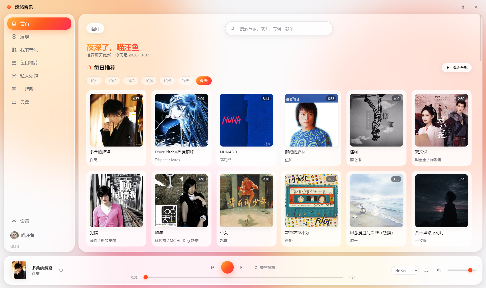
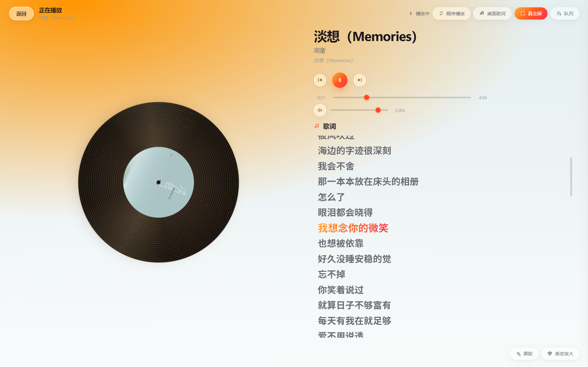
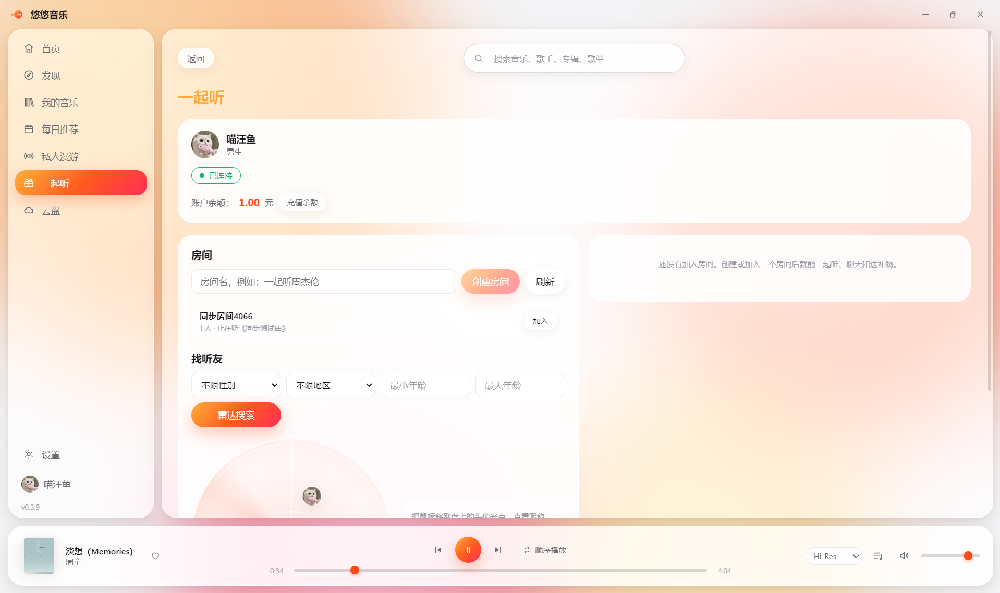

扫码登录
用网易云 App 扫一扫即可登录，歌单、收藏、每日推荐与云盘全部同步。
悠悠音乐是一款 Windows 桌面音乐客户端：扫码登录网易云账号，歌单、专辑、歌手、每日推荐、 私人漫游一应俱全；拿不到完整音频的歌曲会自动匹配完整音源，绝不给你听半截。
当前版本 —
日常听歌需要的东西，都在这里。
用网易云 App 扫一扫即可登录，歌单、收藏、每日推荐与云盘全部同步。
官方拿不到完整音频时，自动到多个音源里严格匹配同一首歌；宁可跳过也不播翻唱或半截。
达不到所选音质时自动降到可播放的最高档，并在播放条上如实显示，不虚报档位。
置顶透明歌词条，经典、渐变、霓虹、逐字卡拉OK 四种特效，可换字体与字号。
黑胶、胶片、波形、星海四种视觉；歌词逐行滚动，进入真全屏只属于音乐。
听过的歌与封面缓存到本地，再次播放直接读盘；缓存上限可调，还能一键清理。
键盘媒体键、Ctrl + 方向键切歌与音量、任务栏缩略图按钮、托盘常驻与单实例。
启动时自动检查新版本，倒计时后可一键更新；便携版自替换，安装版静默安装。
和朋友同步听同一首歌：一方建房间，另一方加入，进度自动同步。房间内可以聊天、 发表情、送礼物；还能用雷达找听友，按性别、年龄、地区筛选。
把截图放进 assets/ 目录即可替换（文件名见下方说明）。



Windows 10 / 11 · 64 位。安装版会创建桌面与开始菜单快捷方式；便携版是单文件，放在哪都能直接运行。
下载的是最新版本；如果你习惯用 GitHub，也可以到 项目发布页 自行选择版本。
官方接口对部分歌曲只给试听片段或不返回完整音频。客户端会自动到多个音源里严格匹配同一个版本（时长、歌名、歌手、版本标记全部一致才采用），匹配不到就自动跳过，不会给你听半截。
扫码登录网易云账号后可用完整功能（歌单、每日推荐、云盘、一起听）。不登录也能浏览部分公开内容。
出口 IP 被网易云限流了。客户端已经会在通道之间自动降级重试，仍失败时稍后再试或换个网络即可。
想固定安装、要开始菜单入口就选安装版；想放 U 盘或换机器直接用就选便携版。两者功能完全一致，内置更新都支持。
双方都装悠悠音乐并登录，进入「一起听」页面会自动连上服务，一方创建房间、另一方加入即可同步听歌、聊天与送礼物。